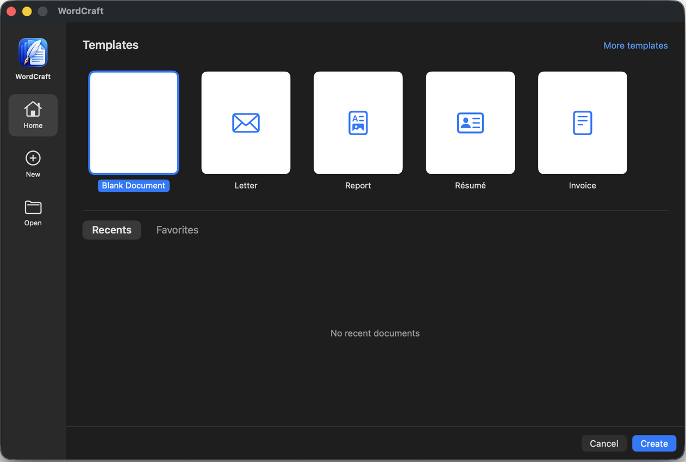
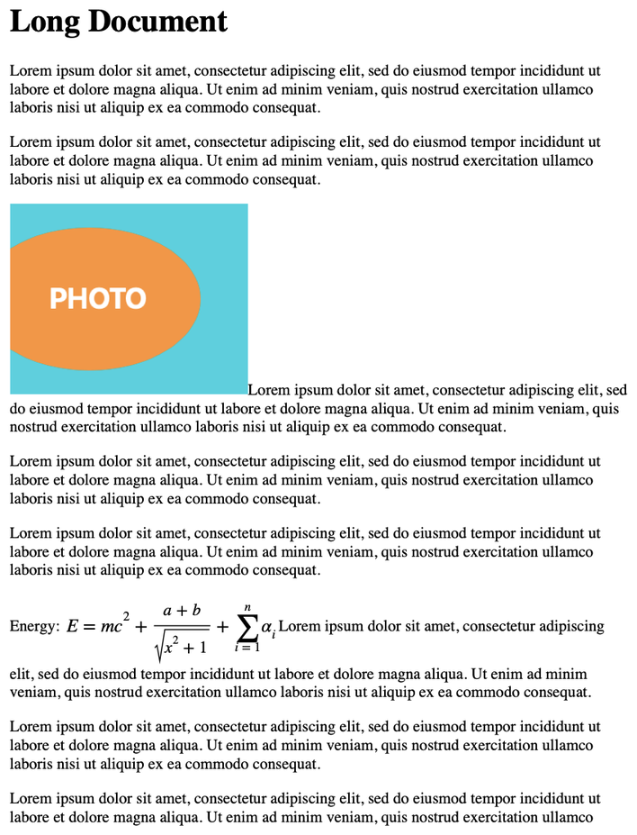
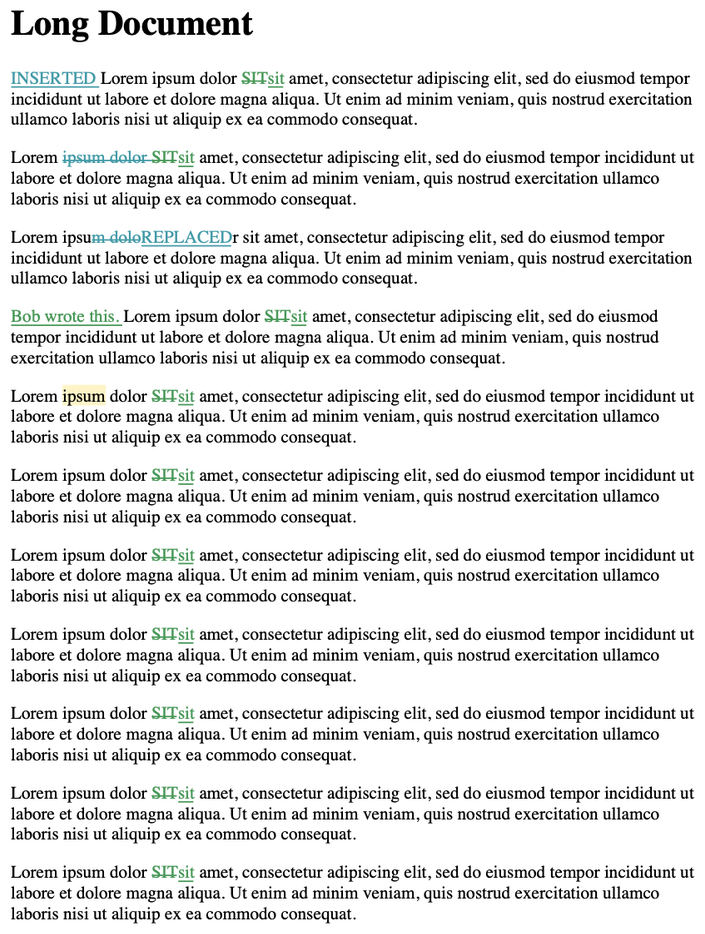
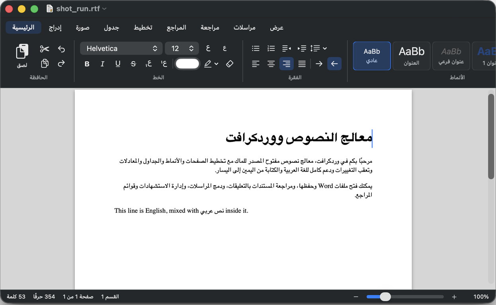

Everything you need to write
A full-featured word processor, built natively for macOS.
Real pages
Page view with margins, columns, sections, headers, footers and footnotes at the bottom of the page.
Styles & structure
Style gallery, navigation pane, table of contents, captions, cross-references and an index.
Pictures, tables, equations
Floating pictures with text wrap, shapes, text boxes, tables with formulas, and equations.
Review together
Track changes, comments with replies, compare documents and restrict editing.
Research tools
Citations and bibliography in APA, MLA, Chicago and IEEE. Mail merge from CSV.
Arabic & RTL
Full Arabic interface and right-to-left editing, with mixed-direction text handled correctly.
Opens your Word files
Open and export .docx, plus RTF, HTML, text and PDF export.
Automation
AppleScript and Shortcuts actions, templates, content controls and forms.
See it in action
Real screenshots from WordCraft 1.0.




What's included
Free forever — and the source code is yours to read.
| Area | What you get |
|---|---|
| Real pages | Page view, columns, sections, headers & footers, footnotes |
| Styles | Style gallery, editable styles, navigation pane, table of contents |
| Objects | Pictures with text wrap, shapes, text boxes, tables, equations |
| Review | Track changes, comments, compare documents, restrict editing |
| Research | Citations & bibliography, index, captions |
| Automation | Mail merge, templates, AppleScript, Shortcuts |
| Files | Open .docx, RTF, HTML, text · Export .docx, PDF, RTF |
| Privacy | Sandboxed, no account, no tracking, MIT / Apache-2.0 |
Install in 3 steps
It takes less than a minute.
Download
Get WordCraft-1.0.dmg using the button above.
Drag to Applications
Open the DMG and drag the WordCraft icon onto the Applications folder.
Open it
The first time, right-click WordCraft and choose Open, then confirm. (The app isn't notarized yet, so macOS asks once.)
Questions
Is it really free?
Yes. WordCraft is open source under the MIT or Apache-2.0 license. There are no ads, accounts or subscriptions.
Can it open my Word documents?
Yes, it opens .docx files and exports .docx and PDF. Complex Word content such as SmartArt and charts is skipped for now, and page breaks may differ slightly.
Why does macOS warn me?
The app is signed ad hoc and isn't notarized by Apple yet. Right-click the app and choose Open the first time. You can verify the download with the SHA-256 checksum on the release page.
Which Macs are supported?
macOS 15 or newer, on Apple silicon Macs (M1 and newer). An Intel build is not available yet.
Is it from Microsoft?
No. WordCraft is independent and not affiliated with or endorsed by Microsoft.